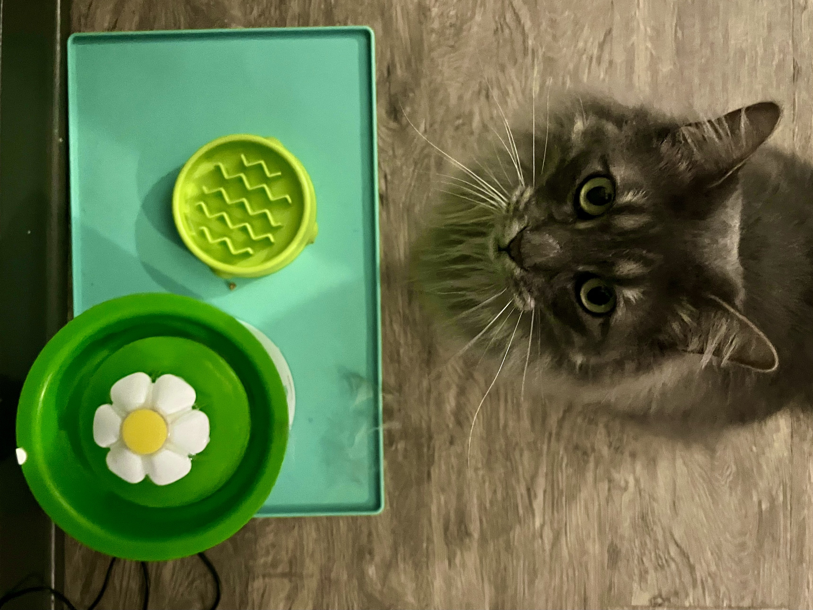

Gouda, Willow and Biscuit are apartment cats in downtown Columbia, MO. They live their lives in the small apartment rented college student mothers. This is what at what their day looks like.
Gouda, a 3-year-old cat, looks out a balconet door, into the small alley outside the apartment. The view is dominated by the neighboring Artworx Studio.
Willow, a 2-year-old cat, prepares to pounce on a ribbon and mouse cat toy.
Biscuit, a 10-month-old kitten naps on a coat that’s fallen off a chair, on to the ground.

Gouda, a 3-year-old cat, stands in front of his food bowl and asks for dinner. It was only 3 p.m.
Willow, a 2-year-old cat, looks out into the alley outside the apartment building. The window faces the backside of various businesses in downtown Columbia.